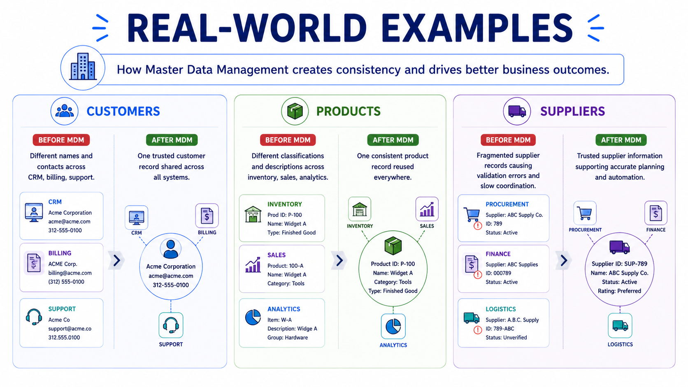

Real-World Examples
Module support notes
The concepts covered in this module — domains, entities, source systems, ownership, and trusted views — become most meaningful when you see them in action. This page walks through three common business scenarios and shows what changes when MDM is in place.
Customer data
Without MDM, a customer interacting with sales, support, billing, and analytics may appear differently in each system — different names, outdated contacts, conflicting records. With MDM, organizations establish one trusted customer view reused across all systems. Reporting improves, customer experience becomes more consistent, and AI receives richer, more reliable context for analytics and personalization.
Product data
Product information is shared across inventory, procurement, sales, operations, and analytics. Without alignment, teams classify products differently and reports become difficult to trust. MDM creates a consistent product view that improves operations and produces more reliable inputs for forecasting, recommendation engines, and AI analysis.
Supplier data
Supplier information supports purchasing, contracts, payments, and operational planning. Fragmented supplier records lead to duplicated effort, validation errors, and slower coordination. MDM establishes trusted supplier information that improves planning accuracy — and gives AI and automation more structured, consistent data to work with.

The consistent pattern
Across every example, the pattern is the same. Before MDM: fragmented information, duplicate records, competing definitions. After MDM: consistent, trusted, reusable business information that improves operations, supports decisions, and makes AI more dependable. The value of MDM is not simply cleaner data — it is creating business information that organizations can actually rely on.
Coming up in Module 3
Now that you understand what master data is and how it works in practice, the next module moves into strategy — how organizations define MDM goals, build a business case, and plan for implementation.